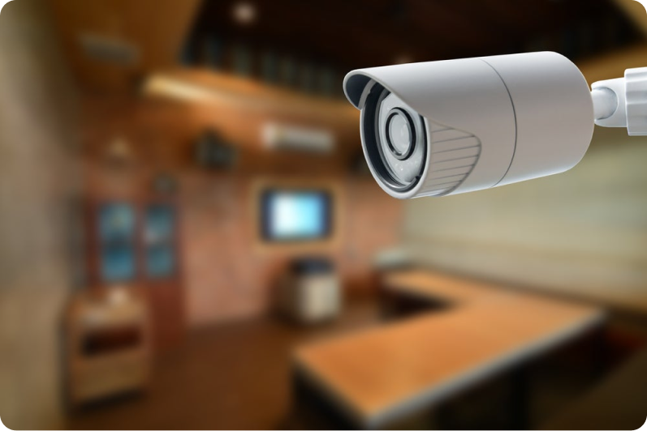
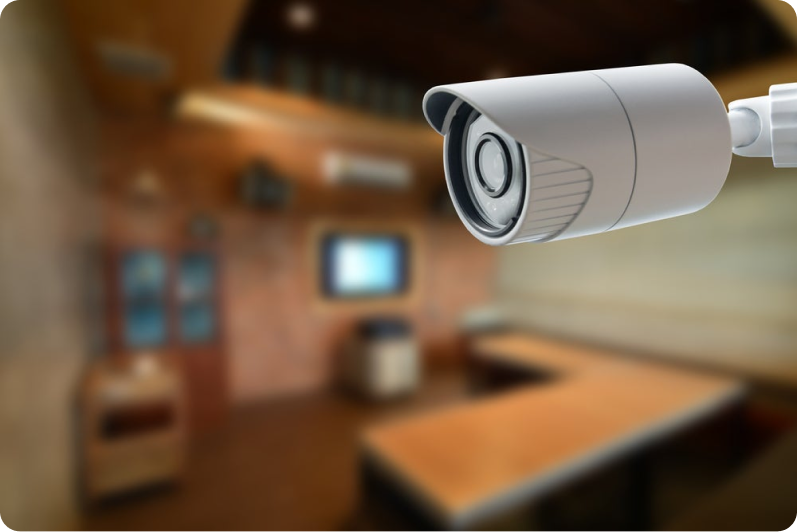

Closed-circui
Closed-circuit television (CCTV), also known as video
surveillance, is the use of video cameras to transmit a signal to
a specific place, on a limited set of monitors. It differs from
broadcast television in that the signal is not openly transmitted,
though it may employ point-to-point (P2P), point-to-multipoint
(P2MP), or mesh wired or wireless links. Even though almost all
video cameras fit this definition, the term is most often applied
to those used for surveillance in areas that require additional
security or ongoing monitoring (Videotelephony is seldom called
"CCTV").
Surveillance of the public using CCTV is common in
many areas around the world. In recent years, the use of body worn
video cameras has been introduced as a new form of surveillance,
often used in law enforcement, with cameras located on a police
officer's chest or head. Video surveillance has generated
significant debate about balancing its use with individuals' right
to privacy even when in public.
In industrial plants,
CCTV equipment may be used to observe parts of a process from a
central control room, especially if the environments observed are
dangerous or inaccessible to humans. CCTV systems may operate
continuously or only as required to monitor a particular event. A
more advanced form of CCTV, using digital video recorders (DVRs),
provides recording for possibly many years, with a variety of
quality and performance options and extra features (such as motion
detection and email alerts). More recently, decentralized IP
cameras, perhaps equipped with megapixel sensors, support
recording directly to network-attached storage devices, or
internal flash for completely stand-alone operation.
History
An early mechanical CCTV system was developed in June 1927 by
Russian physicist Léon Theremin (cf. Television in the Soviet
Union). Originally requested by the Soviet of Labor and Defense,
the system consisted of a manually-operated scanning-transmitting
camera and wireless shortwave transmitter and receiver, with a
resolution of a hundred lines. Having been commandeered by Kliment
Voroshilov, Theremin's CCTV system was demonstrated to Joseph
Stalin, Semyon Budyonny, and Sergo Ordzhonikidze, and subsequently
installed in the courtyard of the Moscow Kremlin to monitor
approaching visitors.
Another early CCTV system was installed by Siemens AG
at Test Stand VII in Peenemünde, Nazi Germany in 1942, for
observing the launch of V-2 rockets.
In the U.S. the first commercial closed-circuit
television system became available in 1949, called Vericon. Very
little is known about Vericon except it was advertised as not
requiring a government permit.
Technology
The earliest video surveillance systems involved constant
monitoring because there was no way to record and store
information. The development of reel-to-reel media enabled the
recording of surveillance footage. These systems required magnetic
tapes to be changed manually, which was a time-consuming,
expensive and unreliable process, with the operator having to
manually thread the tape from the tape reel through the recorder
onto an take-up reel. Due to these shortcomings, video
surveillance was not widespread. VCR technology became available
in the 1970s, making it easier to record and erase information,
and the use of video surveillance became more common.
During the 1990s, digital multiplexing was developed,
allowing several cameras to record at once, as well as time lapse
and motion-only recording. This saved time and money which then
led to an increase in the use of CCTV.
Recently CCTV technology has been enhanced with a
shift toward Internet-based products and systems, and other
technological developments.
 

Application
Closed-circuit television was used as a form of pay-per-view
theatre television for sports such as professional boxing and
professional wrestling, and from 1964 through 1970, the
Indianapolis 500 automobile race. Boxing telecasts were broadcast
live to a select number of venues, mostly theaters, where viewers
paid for tickets to watch the fight live. The first fight with a
closed-circuit telecast was Joe Louis vs. Joe Walcott in 1948.
Closed-circuit telecasts peaked in popularity with Muhammad Ali in
the 1960s and 1970s, with "The Rumble in the Jungle" fight drawing
50 million CCTV viewers worldwide in 1974, and the "Thrilla in
Manila" drawing 100 million CCTV viewers worldwide in 1975. In
1985, the WrestleMania I professional wrestling show was seen by
over one million viewers with this scheme. As late as 1996, the
Julio César Chávez vs. Oscar De La Hoya boxing fight had 750,000
viewers. Although closed-circuit television was gradually replaced
by pay-per-view home cable television in the 1980s and 1990s, it
is still in use today for most awards shows and other events that
are transmitted live to most venues but do not air as such on
network television, and later re-edited for broadcast.
Marie Van Brittan Brown first pioneered and patented a
CCTV home security system, much of the technology of which is
still used in home security systems today.
In September 1968, Olean, New York was the first city
in the United States to install video cameras along its main
business street in an effort to fight crime. Another early
appearance was in 1973 in Times Square in New York City. The NYPD
installed it to deter crime in the area; however, crime rates did
not appear to drop much due to the cameras. Nevertheless, during
the 1980s video surveillance began to spread across the country
specifically targeting public areas. It was seen as a cheaper way
to deter crime compared to increasing the size of the police
departments. Some businesses as well, especially those that were
prone to theft, began to use video surveillance. From the
mid-1990s on, police departments across the country installed an
increasing number of cameras in various public spaces including
housing projects, schools and public parks departments. CCTV later
became common in banks and stores to discourage theft, by
recording evidence of criminal activity. In 1997, 3,100 CCTV
systems were installed in public housing and residential areas in
New York City.
Experiments in the UK during the 1970s and 1980s,
including outdoor CCTV in Bournemouth in 1985, led to several
larger trial programs later that decade. The first use by local
government was in King's Lynn, Norfolk, in 1987.